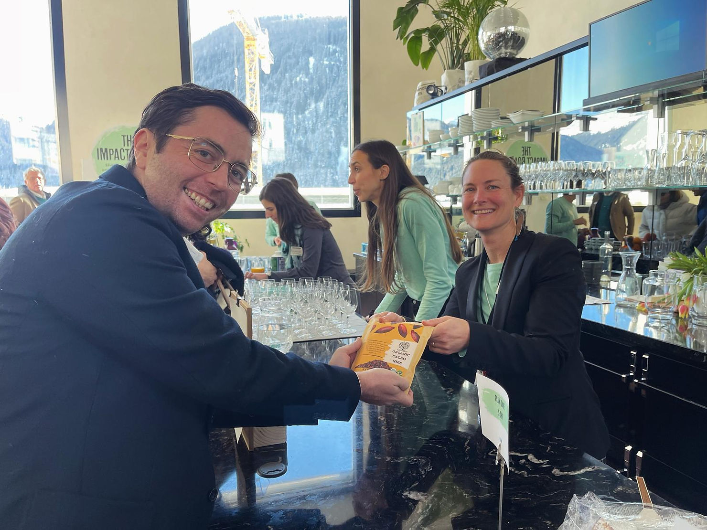

Two winters
There is the winter on charts—the cooling of liquidity, headlines, and the easy yes. And there is the winter in kitchens and ports, where a slow season means invoices still arrive while pallets move reluctantly. TrueSight sits across both worlds: an on-chain governance community and a physical cacao network. This essay is a community note, not a forecast. We want to speak plainly about downturns without turning pain into propaganda.
Fallow is not failure
In agroecology, resting soil is how fertility returns. The same field punished year after year yields quantity until it yields grief. We borrow the metaphor carefully. Human communities are not soil; people need income, care, and dignity in real time. Still, there is a difference between pause and collapse. Pauses can hold space for deeper roots: cooperative relationships, export documentation that finally gets clean, varieties trialed without Instagram performance pressure.
What long-horizon work looks like when hype is quiet
Long horizon is not slogans. It is the unglamorous stack: shipment records updated, breach lessons integrated, proposals written when fewer strangers are watching. Our Davos cacao circles moment made visibility; the next chapters are often invisible—container cadence, importer relationships, store-level velocity. That work continues when token markets yawn.
Community patience as a practice
Patience is not asking people to endure exploitation quietly. It is mutual clarity: which risks are shared, which sacrifices are temporary, which promises are conditional on events no one controls. Governance at TrueSight works best when forums separate venting from decisions, and when records let newcomers understand why a path was chosen without re-litigating every tired evening.
Reasons for hope that are not magical thinking
Perennial crops reward steadiness: cacao trees do not care about quarterly memes; they respond to years of care.
Transparency compounds: each documented movement makes the next conversation shorter.
Hybrid humans + tools: as cognitive drafts commoditize, relational reliability becomes rarer—and more valuable. Our DAO evolution research traced that shift in detail.
Closing: keep the center kind
Winter is a season, not a moral judgment. If you are here building, resting, or recovering, you belong to the same ecosystem. The goal is regeneration with honesty—so the spring that returns is trustworthy, not merely loud.
Join the discussion
Share what “long horizon” means in your locale—without giving financial advice—in Telegram and on the DAO web app.